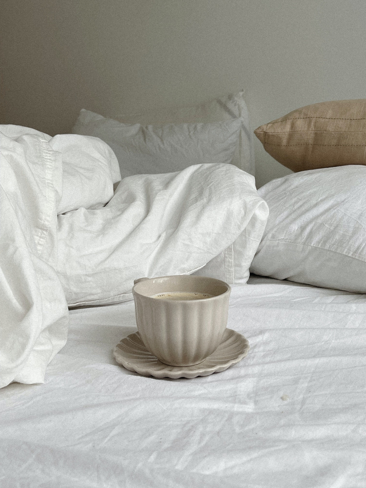
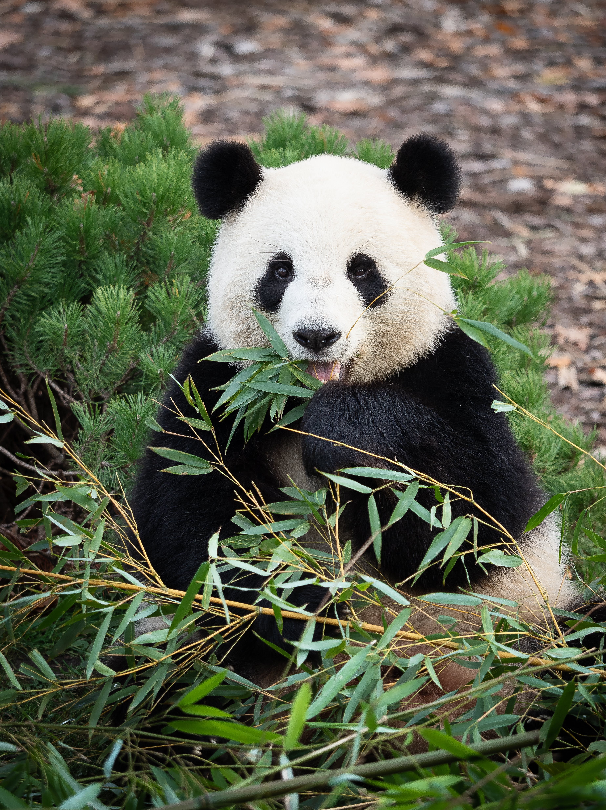

Placeholder
Towels
Bamboo towels, known for their exceptional softness, absorbency, and eco-friendliness, offer a luxurious and sustainable alternative to traditional cotton towels.
View details »

Placeholder
Pillows
Bamboo pillows, crafted from natural bamboo fibers, provide a supportive and hypoallergenic sleep experience, promoting comfort and breathability for a restful night's sleep.
View details »

Placeholder
Clothes
Bamboo baby clothes, made from soft and gentle bamboo fibers, offer a breathable, hypoallergenic, and eco-friendly option for keeping infants comfortable and stylish.
View details »
In the heart of verdant forests lies a plant that embodies adaptability, sustainability, and boundless utility - bamboo. From its origins in dense woodlands to its manifold applications in daily life, bamboo captures the imagination with its resilience and versatility.
A Voyage of Exploration
The allure of bamboo begins with its remarkable growth story. Witnessing bamboo's rapid emergence from the earth, reaching skyward with remarkable speed, reveals nature's ingenuity and vitality. This astonishing growth not only astounds but also offers insights into the interconnectedness of life on our planet.
A Testimony to Its Versatility
Beyond its growth rate, bamboo exhibits versatility unparalleled in the plant kingdom. With over 1,500 species thriving in diverse environments, bamboo's adaptability is awe-inspiring. From construction to craftsmanship, bamboo finds applications as varied as its forms like chairs, and tables.
In construction, bamboo stands as a sustainable alternative to traditional materials. Its strength, coupled with natural durability, renders it suitable for structural and decorative purposes alike. From flooring to furniture, bamboo's eco-friendly properties marry function with aesthetics, showcasing a harmonious relationship with nature.
Yet, bamboo's versatility transcends practicality. In the hands of artisans, bamboo becomes a medium for creativity and expression. Woven into baskets or shaped into musical instruments, bamboo's smooth texture and vibrant hues inspire artistic endeavors, highlighting its cultural significance and artistic allure.
Eco-Friendly and Sustainable
In an era of environmental awareness, bamboo emerges as a beacon of sustainability. With rapid growth and minimal environmental impact, bamboo offers a renewable solution to ecological challenges. Unlike traditional timber, bamboo matures swiftly, allowing for frequent harvests without depleting resources or harming ecosystems.
Moreover, bamboo cultivation requires minimal chemical inputs, reducing environmental degradation associated with conventional agriculture. As a carbon-neutral material, bamboo aids in mitigating climate change by sequestering carbon dioxide from the atmosphere.
Embracing Bamboo
As we marvel at bamboo's wonders, we mustn't forget our duty to safeguard its future. Through sustainable practices and advocacy, we can ensure bamboo forests flourish for generations. Let us cherish bamboo not only for its utility but also for its role in preserving the planet's biodiversity and beauty. Bamboo items are also acknowlegded by how they're cleaned validating why they are the perfect choice.
In conclusion, bamboo symbolizes resilience, sustainability, and the interconnectedness of life. Let us embrace bamboo's versatility and harness its potential to create a greener, more sustainable world for all.